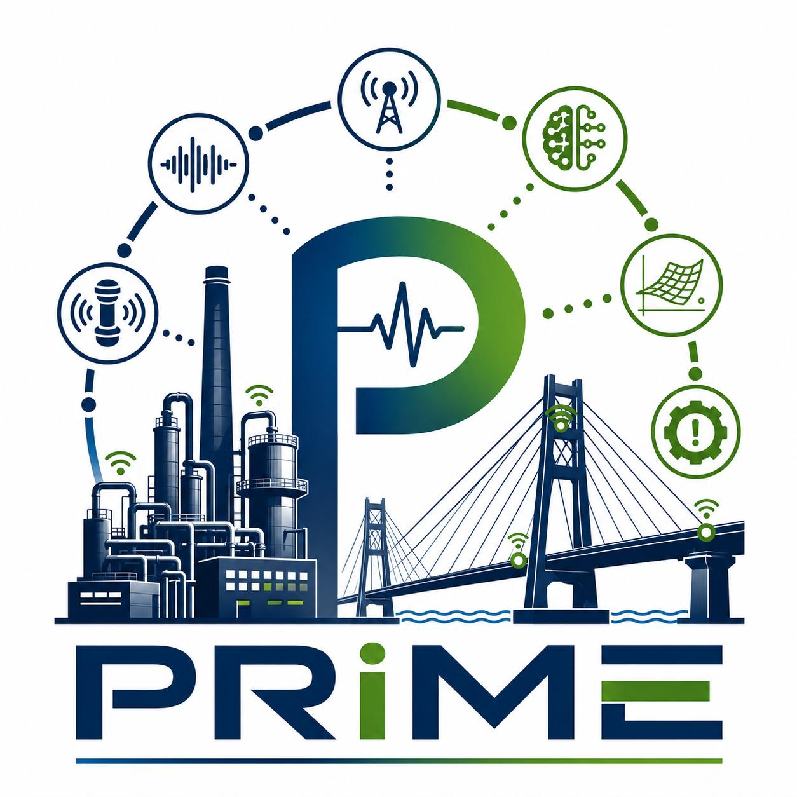
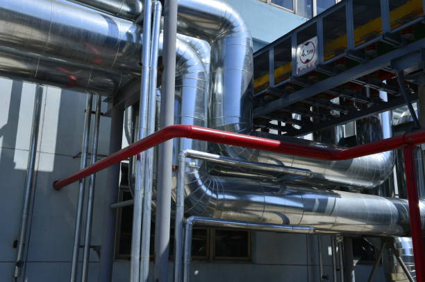
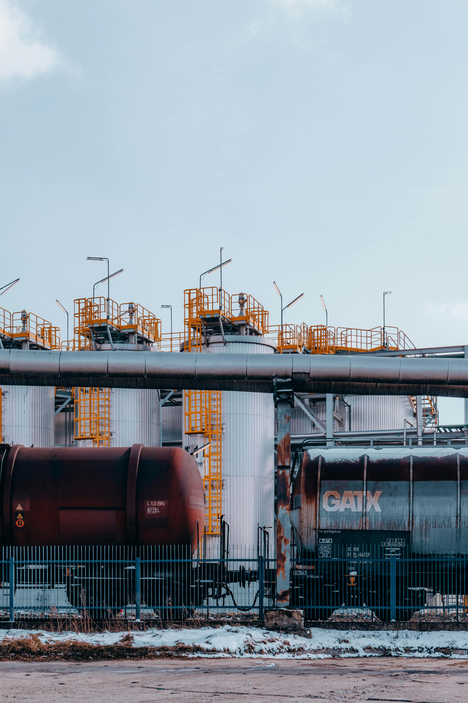
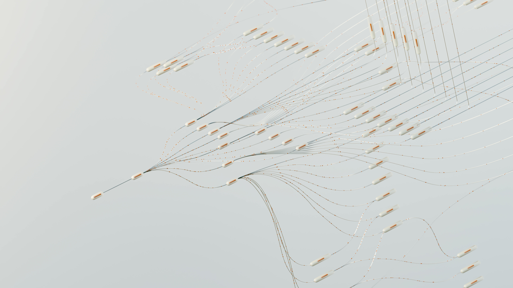
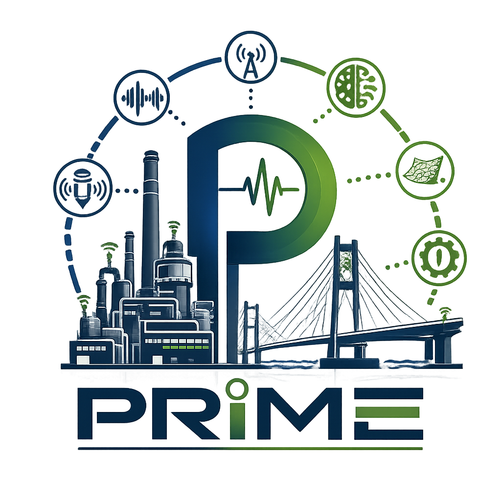

vai al contenuto della pagina
vai al menu di navigazione

BRIC INAIL 2026
Platform for Reliable Intelligent Monitoring and prognostics in Engineering
☰
Menu
Home
Overview
Descrizione
Attività
Documenti
Apri sottomenù
Journal papers
Conference Proceedings
Thesis
Meetings
Partner
Referenti
Risultati
Agenda

Monitoraggio di Impianti Industriali

Monitoraggio di Impianti e Cisterne
Reti di Sensori IoT ed Edge Intelligence

Algoritmi di AI e Deep Learning
Pausa
Play
Partner

Torna su